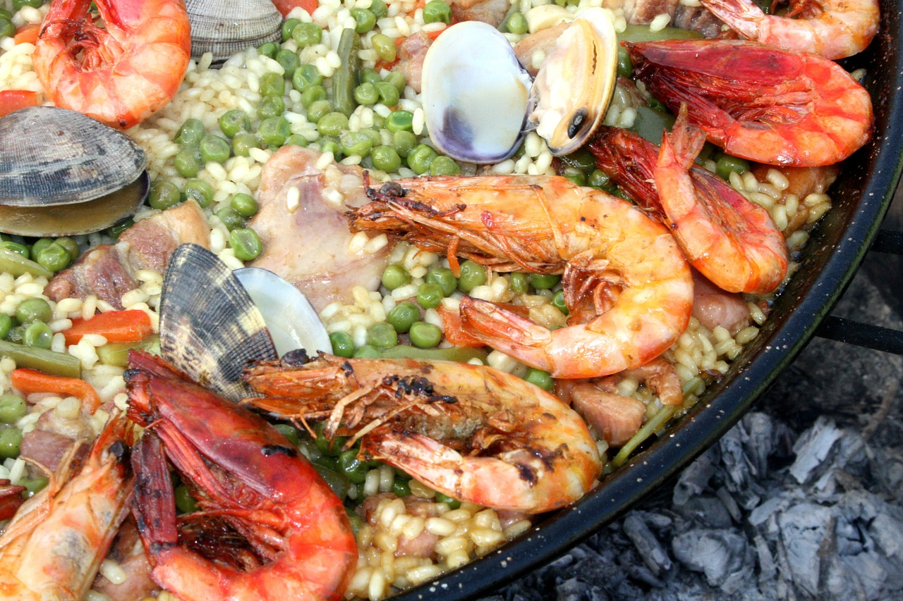

Paella
| Zutaten für |
| 400 g Meeresfrüchte |
| 250 g Reis (Paella- oder Risottoreis) |
| 80 g Erbsen, TK |
| 2 Knoblauchzehe(n) |
| 2 Zwiebel(n) |
| 1 Paprikaschote(n), rot |
| 5 g Paprikapulver |
| 5 g Salz |
| 700 ml Gemüsebrühe |
| 700 ml Weißwein |
Zubereitung
- 3 EL Olivenöl erhitzen, Zwiebeln und die Hälfte des kleingehackten Knoblauchs glasig dünsten. Den Reis hinzufügen, kurz mit andünsten und mit Safran/Kurkuma und Pfeffer würzen. Mit dem Wein und der Brühe auffüllen, zum Kochen bringen und unter Rühren garen.
- In einer separaten Pfanne 3 EL Olivenöl erhitzen. Nun die Meeresfrüchte, die in Streifen geschnittene Paprika, die Erbsen und den restlichen Knoblauch kurz anbraten und zu dem Reis geben. Alles so lange köcheln, bis die Brühe weitestgehend verkocht ist. Mit Paprika, Cayennepfeffer und Salz abschmecken.
Rezept erstellt von

Valentin